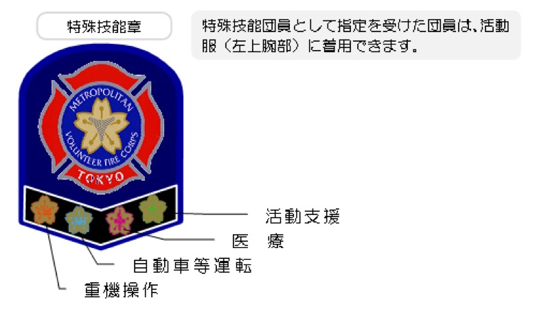

特殊技能班とは？
特殊技能班は、震災等の大規模災害において、特殊技能団員が消防署隊と連携して、効果的に救助活動、救護活動、資器材等の搬送活動、安全管理等の活動を行うことを目的として編成される組織です。
平成17年6月の特別区消防団運営委員会諮問「震災時の大規模な災害等において特殊技能を有する消防団員が効果的に活動するための方策はいかにあるべきか」の答申を受け、平成18年9月1日から施行されました。
適用事象：震災及び大規模災害において、署長が特殊技能班の活動を必要と認めた場合又は団長が災害の状況等により必要と認めた場合に、団長が特殊技能団員を招集し、特殊技能班の出場を命じた災害を対象に活動要領が適用されます。
4つの活動区分
🚜
重機操作
重機を操作し、災害に対応した活動を行います。がれきの撤去や救助活動の支援など、重機の専門技能を活かした活動です。
🚛
自動車等運転
マイクロバス、トラック等を運行し、活動人員、資器材、傷者等の搬送を行います。輸送技能を活かした機動的な活動です。
🏥
医療
現場救護所や仮救護所等における救護活動やトリアージに関する協力を行います。医療の専門知識を活かした活動です。
🔧
活動支援
特殊技能資格等を活用した災害活動の支援を行います。建築・電気・語学など多様な専門スキルを活かした活動です。
活動支援区分 対象資格一覧
建築関係
- 一級建築士
- 二級建築士
- 木造建築士
- 一級土木施工管理技士
- 二級土木施工管理技士
- 二級建築施工管理技士
- 一級建設機械施工技士
- 一級管工事施工管理技士
- 二級管工事施工管理技士
- 二級ボイラー技士
- 測量士
- 測量士補
- 技術士（建設）
- 土止め支保工作作業主任者
- 木造組立作業主任者
- 木造建築物解体工事作業責任者
- 一級造園施工管理技士
- 造園業従事者
- 都市ガス内管工事士
- 二級左官技能
- 上下水道工事士
- 配管技能
- とび職
- 大工
建設関係
- 第二種酸素欠乏危険作業特別教育
- 酸素欠乏危険作業主任者技能講習
- 有機溶剤作業主任者
- 毒劇物取扱責任者（一般）
- 石綿作業主任者技能講習
- 高所作業車運転者技能講習
- 火薬類取扱保安責任者 甲種
- 足場の組立て等作業主任者
- コンクリート破砕器作業主任者
- 高圧ガス保安責任者（甲種化学）
- 高圧ガス取扱主任者
- 高圧ガス移動監視者
- 第一種高圧ガス販売主任者
- 玉掛け技能講習
- ガス溶接技能者
- ガス溶接作業主任者
- アーク溶接等業務に係る特別教育
- 特定化学物質作業主任者
- 有機溶剤管理者
- 建設機材
- ホイストクレーン
設備関係
- 設備士甲四
- 設備士乙一
- 設備士乙四
- 二級ボイラー技士
- 多重無線設備
- 液化ガス設備
電気関係
- 第一種電気工事士
- 第二種電気工事士
- 第二種電気主任技術者
- 第三種電気主任技術者
- 技術士（電気・電子）
- 電気工事施工管理技士
- 電気工事従事者認定
無線関係
- 1級海上特殊無線
- 2級海上特殊無線
- 1級陸上特殊無線
- 2級陸上特殊無線
- 3級陸上特殊無線
- 一級アマチュア無線技士
- 二級アマチュア無線技士
- 三級アマチュア無線技士
- 四級アマチュア無線技士
整備関係
- 二等航空整備士（回転翼航空機）
- 二級ガソリン自動車整備士
- 三級ガソリンエンジン整備士
- 二級ディーゼル自動車整備士
- 一級大型自動車整備士
危険物関係
- 危険物取扱者 甲種
- 危険物取扱者 乙種第一類
- 危険物取扱者 乙種第二類
- 危険物取扱者 乙種第三類
- 危険物取扱者 乙種第四類
- 危険物取扱者 乙種第五類
- 危険物取扱者 丙種
語学関係
- 通訳案内業（ガイド）英語
- 手話通訳士
- 実用英語技能検定 一級
- 実用英語技能検定 準二級
- 実用英語技能検定 二級
- 英語検定3級
- TOEIC 860点以上
- 外国語（英語）
- 外国語（北京語）
- 外国語（台湾語）
- 外国語（スペイン語）
その他
- 潜水士
- 第一種衛生管理者
- 船内荷役作業主任
特殊技能団員になるには
1
消防団に入団
まずは消防団員として入団
2
資格についてはどちらかのルートへ
A
既に資格をお持ちの方
✓
資格の確認
お持ちの資格が対象資格に該当するか確認
B
入団後に資格を取得する方
📚
資格を取得
以下のいずれかの方法で取得
- 団内講習
消防団が実施する指定資格の講習を受講 - 外部取得
外部で資格を取得し、証明書類を準備
3
申請・届出
必要書類を提出して申請
4
認定
特殊技能団員として認定
※ 特殊技能団員の申請は、部長以下の階級の団員が対象です。
特殊技能章

特殊技能章について
特殊技能団員として指定を受けた団員は、活動服（左上腕部）に特殊技能章を着用できます。
特殊技能章には、認定された活動区分が記載されています：
- 重機操作
- 自動車等運転
- 医療
- 活動支援